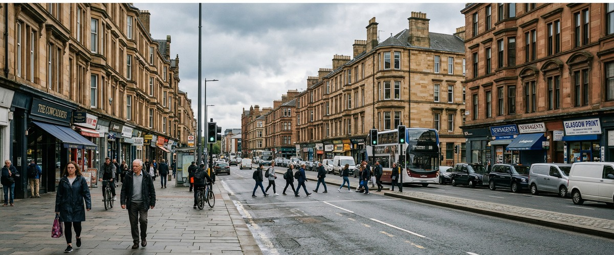
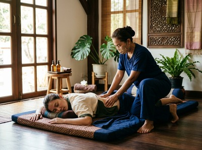

Thai massage in Cowcaddens is closer than most people realise.

Serendipity Massage Therapy & Wellness sits at the foot of Hope Street, just a few minutes' walk from Cowcaddens subway station, making it one of the most accessible massage studios for anyone in this part of the city. Cowcaddens sits directly north of Glasgow city centre, bordered by Garnethill to the south-west and Townhead to the east. It draws a broad mix of students, university staff, creative professionals, and city workers — people who share a patch of Glasgow that's always been more workhorse than tourist attraction.
Glasgow Caledonian University anchors much of day-to-day life in Cowcaddens. The Royal Conservatoire of Scotland on Renfrew Street adds a strong creative and performing arts community to the area. The National Piping Centre on McPhater Street and the nearby Glasgow Film Theatre give the neighbourhood a distinct cultural character. For the students and professionals who live and work here, relief from long study sessions, rehearsal schedules, and desk-heavy workdays is exactly what Serendipity is built to provide.

The short walk down Hope Street to Central Chambers means a session at Serendipity fits naturally into a lunch break or an end-of-day wind-down. Whether you're carrying shoulder tension built up over a semester, or postural strain from hours at a studio desk, regular treatment can address what builds during the week before it becomes a longer-term problem. You can book your session online and be on the table within the same day if space allows.
Serendipity offers a full range of therapeutic and relaxation treatments. All sessions are delivered by a trained therapist team using techniques developed by head therapist Jariya Malone. Available treatments include:
Cowcaddens subway station is the most convenient starting point. Exit the station and head right along Cowcaddens Road, then continue south down Hope Street. The walk to Central Chambers at 93 Hope Street takes around six to seven minutes on foot. Serendipity is on the first floor, Suite 50.
If you prefer the bus, several routes including the 17, 18, and 6 serve Hope Street from stops within Cowcaddens. The journey takes just a few minutes. The wider SPT bus network also connects the area for anyone coming from streets off Cowcaddens Road or New City Road.
Once you arrive at 93 Hope Street, head to Floor 1, Suite 50. The building is easy to find from the street. You can book your appointment in advance to secure your preferred time, or check availability for a same-day visit.
Serendipity Massage Therapy & Wellness is a professional team practice — not a sole trader, not a chain. Every therapist works to the same standard, using techniques developed in-house by Jariya Malone. These draw from the traditional Thai massage tradition and are adapted to deliver precise, repeatable results.
That consistency matters, especially for clients who return regularly for sports recovery, chronic tension, or stress management. You're not starting from scratch each time. You're building on work that's already been done.
For anyone in Cowcaddens exploring massage therapy for the first time, the studio on Hope Street offers a calm and professional setting. Whether your goal is deep muscle relief, relaxation, or an ongoing treatment plan, the team is trained to work with what your body actually needs.
Cowcaddens has one of the longer histories of any Glasgow neighbourhood. Its road appears on maps as far back as 1560, and what began as a village merged into the expanding city in 1846. Large-scale redevelopment in the 1960s and 1970s reshaped much of the area.
Today its northern reaches form part of Glasgow's learning quarter alongside Townhead. You can read more about its history and character at Cowcaddens on Wikipedia.
Serendipity Massage Therapy & Wellness is at 93 Hope Street. That's roughly a six to seven minute walk from Cowcaddens subway station. Head right out of the station along Cowcaddens Road, then south down Hope Street to Central Chambers. It's one of the most direct routes from the area into the city centre.
The subway is the quickest option. Cowcaddens subway station puts you within easy walking distance of the studio on Hope Street. Several bus routes, including the 17, 18, and 6, also stop close to Hope Street if you prefer to travel by bus. Both options are frequent and reliable throughout the day.
Yes, same-day bookings are available subject to therapist availability. The easiest way to check is through the online booking system at serendipitymassage.co.uk. Cowcaddens is so close to the studio that it's perfectly realistic to decide you need a session and be there within the hour.
Traditional Thai massage is a strong choice for anyone dealing with tension from long study sessions or rehearsal schedules. It uses assisted stretching and acupressure to release tight muscles. No oil is needed and there's no change of clothing required. For those carrying stress alongside physical tension, aromatherapy massage uses therapeutic essential oils to help address both at once. The team at Serendipity will always discuss your priorities before the session begins.
Serendipity offers appointments across the week, including times outside standard office hours. This suits those with busy daytime schedules. For current availability and exact appointment times, check the online booking page at serendipitymassage.co.uk or call the studio on 0141 673 6630. Book your treatment online to confirm your preferred slot.